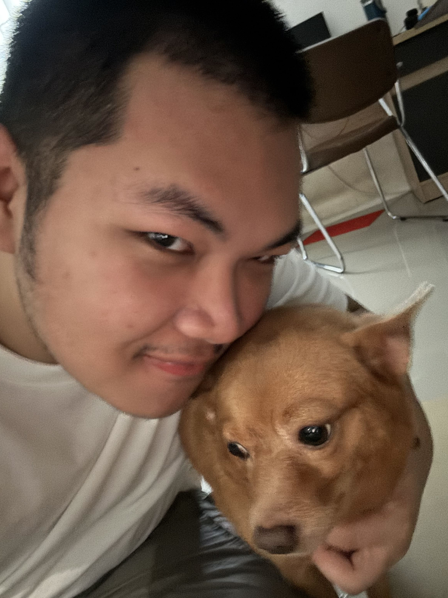
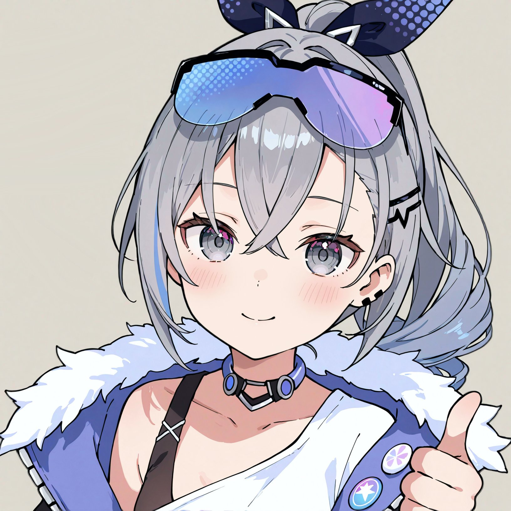

ชื่อ-นามสกุล: นายนภมัธย์ เพชรัตนกูล
ชื่อเล่น: ตั้ว (นกกระตั้ว)
สาขาวิชา: เทคโนโลยีดิจิทัลและสารสนเทศ
กลุ่มเรียน: 1.2-1
เหตุผลที่อยากเรียน Full Stack Web Development:
เป็นหนึ่งในสายอาชีพที่สนใจ พร้อมทั้งตนเองมีความชื่นชอบในการเขียนโค้ด อีกทั้งยังได้รับความรู้ในสิ่งที่ยังไม่เคยรู้มาก่อน
ความคาดหวังต่อวิชานี้:
คาดหวังจะได้เรียนรู้สิ่งใหม่ ๆ ที่ยังไม่เคยเรียนรู้ และนำความรู้ที่ได้รับไปปรับใช้ในอนาคต อีกทั้งยังสร้างพื้นฐานต่าง ๆ เพื่อศึกษาต่อยอดสิ่งใหม่ ๆ ในอนาคตได้ต่อไป
จุดอ่อนที่ต้องพัฒนาเกี่ยวกับทักษะ Programming และแนวทางการพัฒนา:
จุดอ่อนคือความล่าช้าในการทำความเข้าใจโค้ดของโปรแกรม ต้องใช้เวลาในการอ่านและทำความเข้าใจเป็นอย่างมากถึงจะมองออกว่ามีหลักการทำงานอย่างไร
ซึ่งสามารถพัฒนาได้โดยการหัดทำแบบฝึกหัดต่าง ๆ ที่เกี่ยวกับการเขียนโปรแกรม เพื่อช่วยให้มีประสบการณ์และมองภาพรวมในจุดต่าง ๆ ได้ดีมากยิ่งขึ้น
